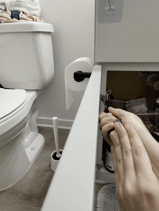
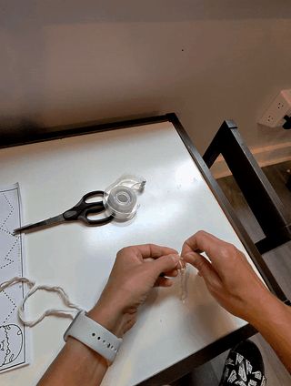
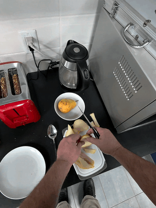
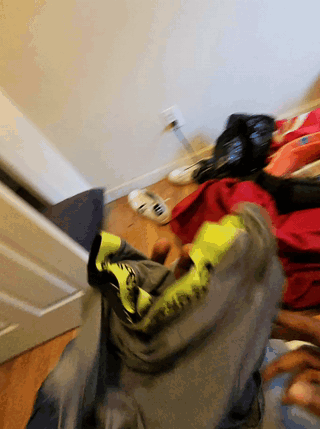
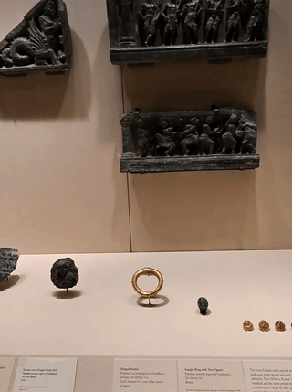
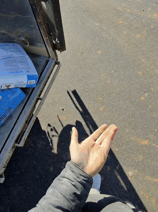

Grand Challenge
Wearable AI Grand Challenge
Wearable AI is one of the most exciting and challenging frontiers in computer vision and AI today. Yet progress has been hampered by a lack of large-scale, realistic benchmarks that reflect the complexity of real-world egocentric experiences — long-duration video, proactive AI interactions, and multi-turn conversations. This grand challenge is designed to close that gap: to catalyze the community around concrete, measurable tasks and to reward reproducible, open-sourced breakthroughs.
In addition to general research paper submissions, our workshop features three specific grand challenge tasks. A total of $21,000 in cash prizes will be awarded to winners with reproducible, open-sourced results. 90% of the data is released as train+dev, with 10% kept hidden for evaluation.
Proactive AI
Given a long egocentric video and user requests, predict proactive engagements (e.g., step-by-step instructions, object finding) at appropriate moments to maximize utility while minimizing disruption.



Multi-turn Conversations
Given a long egocentric video interleaved with user–assistant interactions, predict answers to user questions in a streaming fashion, maintaining coherence with past context.


Long Video Q&A
Given 30+ minute egocentric videos, answer questions posed at the end, via temporal grounding and recall of events spanning the full video duration.


💾 Challenge Dataset
To facilitate this challenge, we are releasing the largest wearable AI dataset ever collected — three newly annotated, large-scale collections that are the first to combine long-duration egocentric video with real user–assistant conversations and proactive AI annotations.
| Dataset | Egocentric | Long QA | User-AI Conv. | Proactive | # Hours |
|---|---|---|---|---|---|
| EpicKitchen | ✓ | ✗ | ✗ | ✗ | 0.1K |
| EgoSchema | ✓ | ✓ | ✗ | ✗ | 0.3K |
| EgoExo | ✓ | ✓ | ✗ | ✗ | 1.2K |
| Ego4D | ✓ | ✓ | ✗ | ✗ | 3.5K |
| Wearable AI | ✓ | ✓ | ✓ | ✓ | 5K |
🔧 Participant Toolkit
Every registered participant will receive our Participant Toolkit: standardized data loaders, evaluation scripts, and a suite of MLLM baseline models covering diverse architectures.
🏁 Participate
Register below to participate in the workshop. Individual registrations are open to all researchers and students. If you are participating in the Grand Challenge with a team, provide your team name in the registration form.